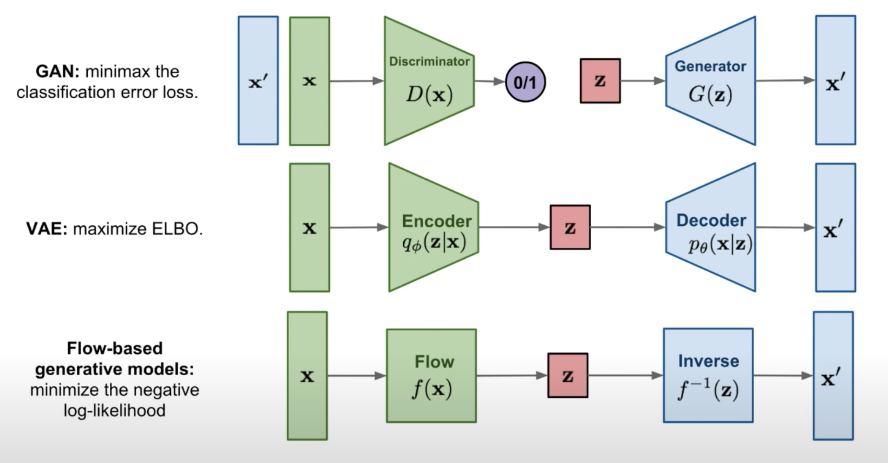
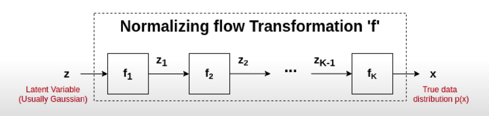

Normalizing Flows and Its Friends (Part 2)¶
What is normalizing flows?¶

One type of generative models is flow-based models, which explicitly learns the mapping between a group of samples x_{1}, x_{2}, ..., x_{n} to their latent distribution p(x).
Normalizing flows is one example of flow-based models.
Why normalizing flows?¶
Given some real world data samples, we are always interested in learning its underlying distributions. Knowing the exact data distribution p(x) is helpful in some scenarios such as sampling data and identifying bias.
Objective
To minimize some notion of distance between p_{D} and p_{M}
- Given a dataset X=x_{1}, x_{2}, x_{3}, ... from an underlying distribution p_{D},
- Can we find an approximating distribution p_{M}, which is from a family of M and parametrized by \theta, to minimize the distance between p_{D} and p_{M} ?
- Mathmatically, it is written as below
-
\theta^{*}=\underset{\theta \in M}{\mathrm{argmin}} \space dist(p_{\theta}, p_{D}$)
- If KL-divergence is the distance function, the above equation becomes the maximum likelihood estimation ...
-
\theta^{*}=\underset{\theta \in M}{\mathrm{argmin}} \space E_{x~p_{D}} [-log \space p_{\theta}(x)]
Flow-based models are different than GAN or VAE, since Flow-based models explicitly learn p(x) by optimizing the log likelihood.
In GAN, the probability density function estimation is implicit by having the minmax classification error. We don't explicitly assign a probability density function and estimate it.
In VAE, we get an approximate probability density function by optimizing the evidence lower bound (which is p_{\theta}(x|z)). The encoder captures the approximate posterior mapping between x and z, which is q parameterized by \phi. The decoder captures p_{\theta}(x|z) which is parameterized by \theta. In this casce, it is an approximate density estimation.
In short, both GAN and VAE do not explicitly learn probability density function of real data p(x).
In flow-based models, given an x, we want to find the function f to get the latent representation z. And if we invert f, we will get x back. The function f(x) and f^{-1}_(x) are exactly the inverse. And the flow-based models try to capture f
How does it work?¶

We try to identify a transformation f: Z \rightarrow X where f is a series of differentiable and invertible functions (f_{1}, f_{2}, ..., f_{K},)
In general, for any invertible function f: Z \rightarrow X, the probability function is below. The detailed steps can be found in this page
Intuition:
- The first term describes the transformation f moulds the density p_{Z}(z) into p_{X}(x).
- The second term describes the relative change of volume around z
In summary, the three requirements must hold for a normalizing flow model:
- Transformation function f should be differentiable
- Transformation function f should be invertible
- Determinant of Jacobian should be easy to compute
Example 1: NICE (Non-linear Independent Components Estimation)¶

Coupling layer operation:
Therefore, its Jacobian is a lower-triangular matrix and the determinant is the product of diagonal elements
The inverse mappings are:
Example 2: Real NVP (Real-valued Non Volume Preserving)¶

Affine coupling operations are (there is one translation component and one scale component for y_{2}):
The Jacobian becomes
Since the Jacobian matrix is not always equal to 1, affine coupling is not always volume preserving which is more realistic in real world data.
The inverse operations are: